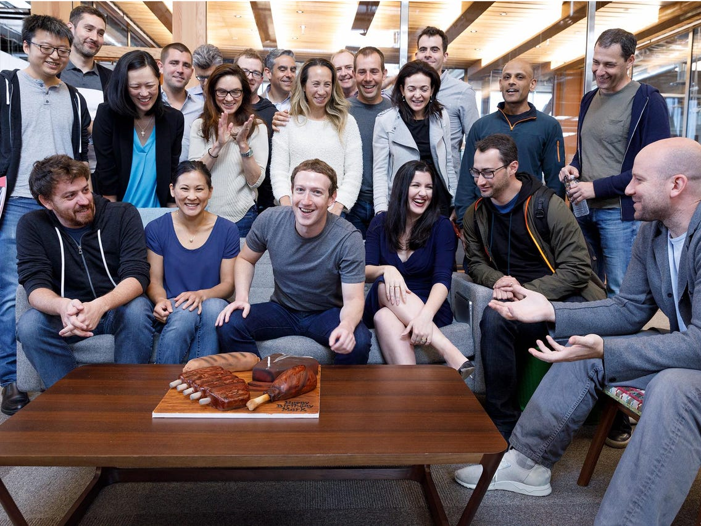

Kiến thức - Kinh nghiệm - Hỏi đáp
Meta, công ty mẹ của Facebook, được cho là đã chi nhiều tiền để tuyển dụng và giữ chân nhân viên sau hàng loạt bê bối làm xấu hình ảnh công ty. Business Insider đã tìm hiểu thông tin từ các nhà tuyển dụng, nhân viên cũ của Meta, cũng như các tài liệu nội bộ... và khẳng định số tiền công ty này đang sử dụng để thu hút nhân sự "lớn hơn bao giờ hết". Cạnh tranh nhân lực ở Thung lũng Silicon vẫn luôn diễn ra gay gắt, trong khi hình ảnh Meta đang dần xấu đi, buộc công ty phải trả giá cao hơn các đối thủ. "Một điều Facebook vẫn có thể làm là trả nhiều tiền hơn nữa", Jose Guardado, nhà tuyển dụng công nghệ giàu kinh nghiệm và là người sáng lập Build Talent, nói. "Họ dễ dàng chi thêm tiền giữ chân những nhân sự hiện có, cũng như trả hơn các công ty khác khi tuyển dụng". Tại Thung lũng Silicon, sự phát triển hay suy tàn của một công ty phụ thuộc rất lớn vào việc tuyển được những nhân viên tài năng nhất. Nếu không có lượng lớn kỹ sư và chuyên gia kỹ thuật tay nghề cao, công ty đó có thể không đạt tốc độ ra mắt sản phẩm mới hoặc mất nhiều thời gian hơn để cập nhật các tính năng quan trọng so với đối thủ.
Năm nay, Meta dự kiến chi phí tuyển dụng có thể tăng lên 97 triệu USD so với mức 70 triệu USD năm 2021. Theo một số nguồn tin, mức tăng này phần lớn là do "đầu tư vào tài năng, kỹ thuật và sản phẩm". Alan Johnson, CEO công ty tư vấn Johnson Associates, cho biết Meta và một số công ty đã phải tăng lương để khắc phục các vấn đề về tuyển dụng và giữ chân nhân viên. Những doanh nghiệp này có điểm chung là dính một số bê bối hoặc khiến công chúng thay đổi nhận thức về mình theo chiều hướng xấu. Theo tài liệu nội bộ mà Protocol có được, công ty của Mark Zuckerberg đang có hơn 4.300 công việc nhưng tỷ lệ chấp nhận các lời mời làm việc đang giảm dần. Năm qua, hàng chục giám đốc cấp cao rời đi, trong khi nhiều nhân viên khác cân nhắc kiếm cơ hội ở nơi khác. Trước đây, Facebook là điểm đến mơ ước tại Thung lũng Silicon nhờ chính sách mở, lương thưởng hậu hĩnh và nhiều đặc quyền, khiến nhân viên đã làm tại đây hiếm khi rời đi. Dù vậy, hình ảnh đó đã thay đổi. Năm 2021, một cựu kỹ sư Oculus - bộ phận sản xuất thiết bị thực tế ảo của Facebook - thậm chí nói quãng thời gian làm tại Facebook có thể sẽ là "vết đen" trong sự nghiệp của một ai đó. Một cựu kỹ sư phần cứng tại Facebook cũng chia sẻ cảm xúc tương tự. Người này cho biết đã nghỉ việc vì lo ngại về tình trạng thông tin sai lệch trên nền tảng và ảnh hưởng của nó đối với trẻ em. Một số cựu nhân viên khác tiết lộ rời Facebook vì danh tiếng công ty bị ảnh hưởng nghiêm trọng, dù họ được đề nghị mức lương cao hơn. Meta cũng hào phóng hơn về các khoản thưởng. Số liệu của Levels.fyi cho thấy, ở cấp độ giám đốc nhóm cấp cao, nhân viên nhận 3-6 triệu USD mỗi năm bằng cổ phiếu. Các giám đốc tầm trung, quản lý nhận trung bình 1 triệu USD, còn kỹ sư cao cấp từ 600.000 USD.
ASM WEB1013 là Assignment môn Xây dựng website
Điện thoại: 0987654321
Email: web1013@dinhnt.com